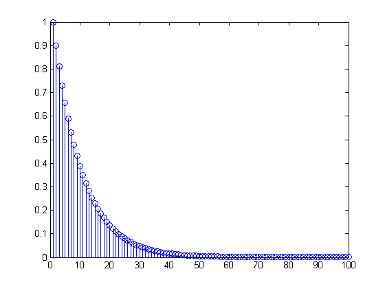
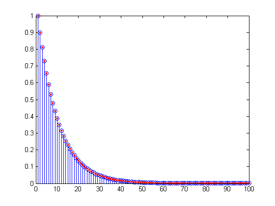
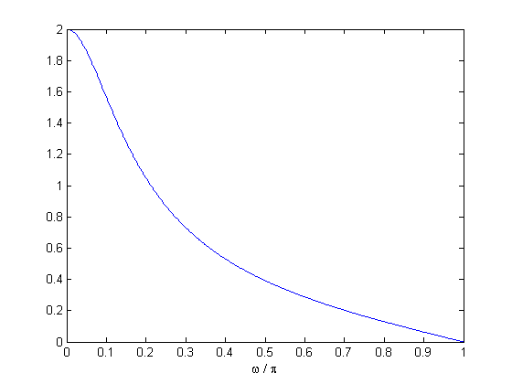
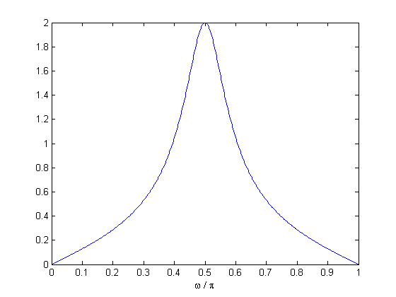

EHB372E - Week 8: IIR Filter Design
We study IIR filters this week. Specifically, we will discuss the relation of an IIR filter with a difference equation, transformation of a continuous time filter to a discrete time IIR filter via the bilinear transform and a method to transform a lowpass filter to a bandpass filter.
Contents
Difference Equations
Consider a difference equation of the form $$ \sum_{k=1}^K\,a_k\,y(n-k) = \sum_{m = 1}^M\,b_m\,x(n-m).$$ If we take the DTFT of the both sides, we can express this equation as $$ \left( \sum_{k=1}^K\,a_k\,e^{j\omega k} \right)\,Y(e^{j\omega})= \left( \sum_{m=1}^M\,b_m\,e^{j\omega m} \right)\,X(e^{j\omega}).$$ This is equivalent to $Y(e^{j\omega}) = H(e^{j\omega})\,X(e^{j\omega})$, where $$ H(e^{j\omega}) = \frac{\sum_{m=1}^M\,b_m\,e^{j\omega m}}{\sum_{k=1}^K\,a_k\,e^{j\omega k}}.$$ Therefore, solving the difference equation is equivalent to filtering $x$ with a filter whose frequency response is $H$ (under zero initial rest conditions!). Notice that a difference equation is easy to implement with a 'for' loop. However, the difference equation may also be realized with the built-in Matlab command 'filter'. If the coefficients 'a' and 'b' above are as defined above, we can solve the difference equation as follows.
% filter coefficients a = [1 -0.9]; b = [1]; % the input x = zeros(1,100); x(1) = 1; % solution of the difference equation y = filter(b,a,x); stem(y);
The code above applies the filter whose frequency response is $(1 - 0.9\,e^{-j\omega})^{-1}$. Observe that $$ \frac{1}{1 - 0.9\,e^{-j\omega}} = \sum_{k=0}^{\infty}\,(0.9)^n\,e^{-j\omega n}.$$ Therefore the impulse response of the system is $h(n) = (0.9)^n \, u(n)$ and it has infinitely many non-zero taps. That is, the system is an infinite impulse response (IIR) system. Note also that the input used above is actually an impulse signal. Therefore, the output is the impulse response. Let us check that.
y2 = 0.9.^(0:length(y)-1); hold on; plot(y2,'r.','MarkerSize',12);
Note that implementing this system approximately using 'conv' would have required to store a very long sequence.
Bilinear Transform
One way to obtain a discrete time IIR filter is to convert a continuous time filter to a discrete time via the bilinear transform. The Matlab commands 'butter', 'cheby1', 'cheby2', 'ellip' make use of this principle to design discrete-time filters. But here, to demonstrate the idea, we will work on a simple example.
Consider a continuous time filter $h_c(t)$ whose transfer function is given as $H_c(s) = 1/(1+s)$. Note that the frequency response magnitude of this filter is, $$ | H_c(j\Omega) | = \left| \frac{1}{1 + j\Omega} \right| = \frac{1}{\sqrt{1 + \Omega^2}}. $$ Thus, $h$ is a lowpass filter. The bilinear transform obtains a discrete-time filter using the equality $$ s = \frac{2}{T}\,\frac{1 - z^{-1}}{1+ z^{-1}}.$$ Note that for $T = 1$, this gives a filter with transfer function $$ H(z) = \frac{1 + z^{-1}}{3 - 2 z^{-1}}.$$ Let us check the frequency response of this filter. We will use 'freqz' for this purpose.
% the coefficients of the IIR filter a = [3 -2]; b = [1 1]; [H,w] = freqz(b,a); % the frequency response figure; plot(w/pi,abs(H)); % the magnitude of the frequency response xlabel(' \omega / \pi ');
Bandpass Transformation
We now discuss a transformation that converts a given discrete-time lowpass filter to a discrete-time bandpass filter. This is achieved by replacing $z$ with $$ - \left( \frac{cz + d }{dz + c} \right)^2.$$ Note that for the case $c =1$, $d = 0$, this is equivalent to replacing $z$ with $z^2$. Thus, for the filter $H(z) = (1 + z^{-1})/(3- 2 z^{-1})$, the new filter transfer function $G(z)$ is given as $$G(z) = H(-z^2) = \frac{1 - z^{-2}}{3 + 2 z^{-2}}.$$ Let us check the frequency response of this new filter.
% the coefficients of the transformed filter G a = [3 0 2]; b = [1 0 -1]; [G,w] = freqz(b,a); % the frequency response figure; plot(w/pi,abs(G)); % the magnitude of the frequency response xlabel(' \omega / \pi ');
Observe that the peak of the frequency response magnitude has shifted from $\omega = 0$ (or $z = 1$) to $\omega = \pi/2$ (or $z = i$). This is a consequence of $G(i) = H(1)$ (Why?). Notice that this in turn is a consequence of the choice $c =1$, $d = 0$. In the exercises, you change these parameters to shift the frequency peak to other locations.
In-Class Assignments
- Implement a system with transfer function $H(z) = 1/(1 - 0.7\,z^{-10000})$. Plot the first 51000 coefficients of the impulse response. Also plot the frequency response. Apply this filter to 'matematik.wav'. In order to better hear the effect, append $3\times f_s$ zeros to the audio signal, where $f_s$ is the sampling frequency (this means adding 3 seconds of silence). Describe what happens.
- Apply the bilinear transform to the continuous time-filter with transfer function $H_4(s) = 1/(1+s^4)$. That is, replace $s$ with $(1-z^{-1})/(1+z^{-1})$. Plot the frequency response magnitude.
- In the bandpass filter design section, we discussed a transformation which replaces $z$ with $ - (cz + d)^2/(dz + c)^2$. Specifically, we took $c =1$, $d = 0$. Using the same lowpass prototype filter, try $c = 1/2$, $d = \sqrt{3}/2$. Determine the peak frequency analytically and verify your answer by plotting the frequency response of the resulting $G$ filter.
- For the previous question, find the coefficients $c$ and $d$ so that the peak of the frequency response occurs at (a) $\omega = \pi/4$, (b) $\omega = \pi/8$. For both cases, determine the filter coefficients and verify your answer by plotting the frequency response of the resulting filter.
Ilker Bayram, Istanbul Teknik Universitesi, 2015